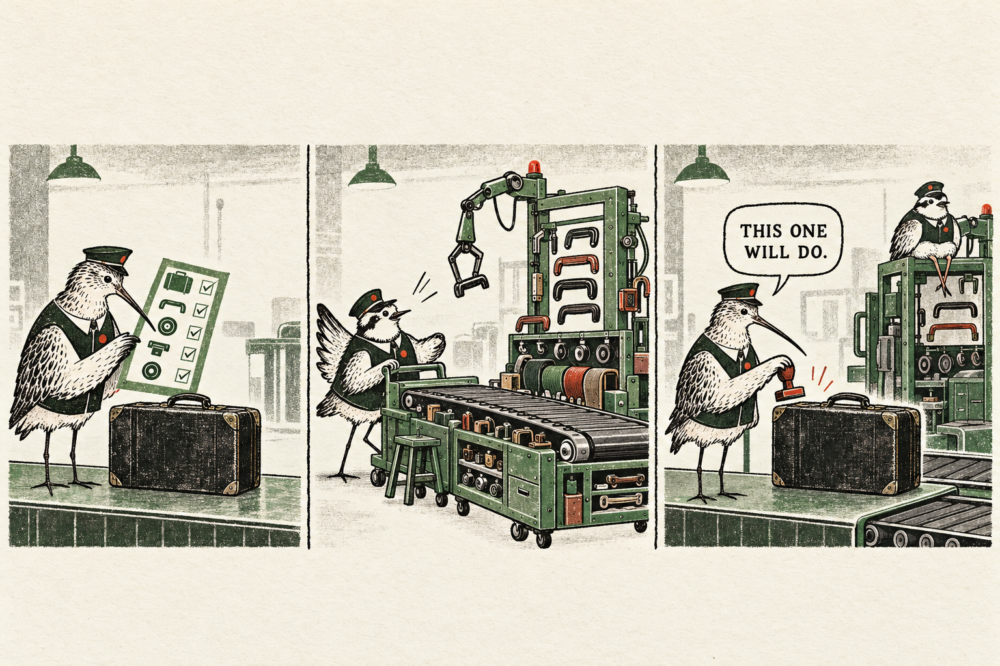
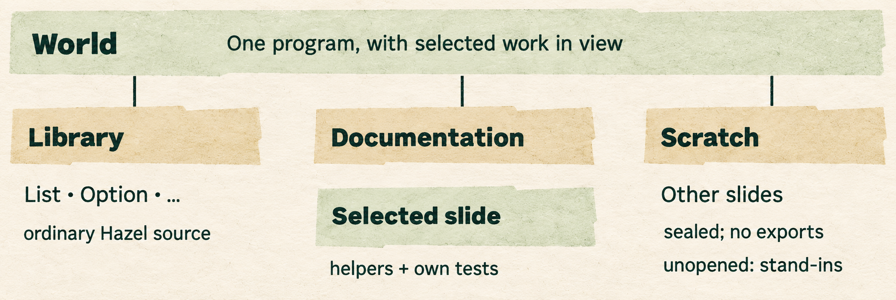
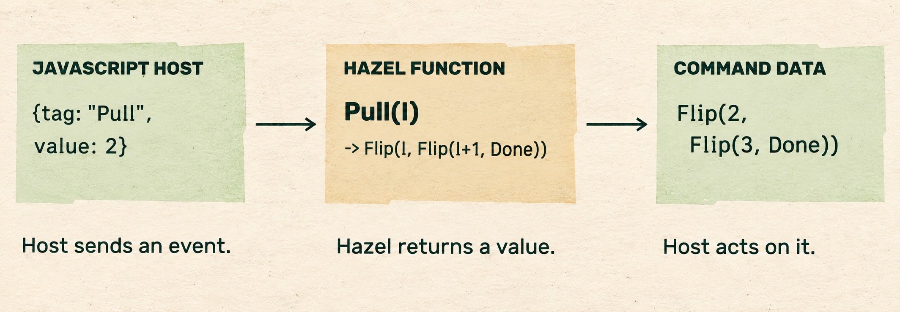
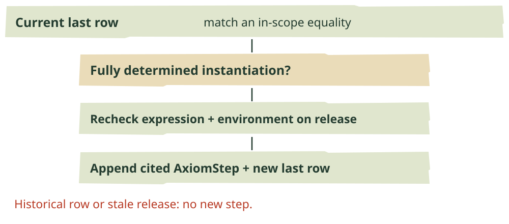
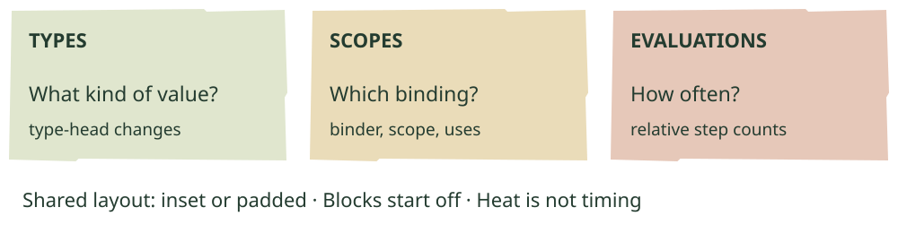
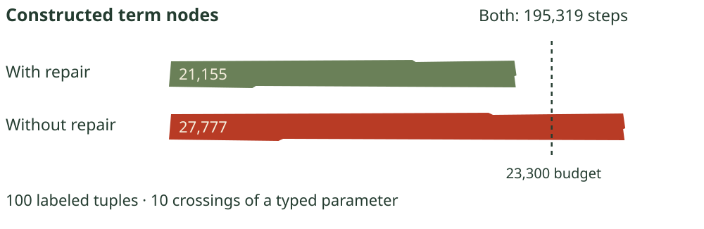
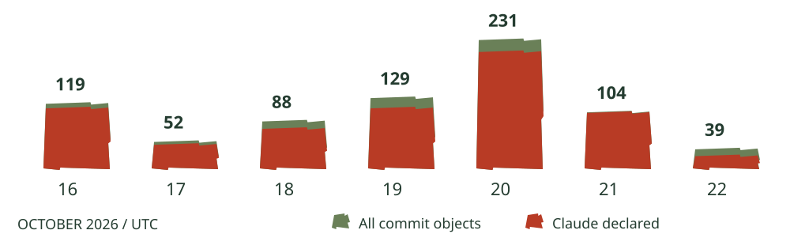

Room to work.
Settings and selection land on dev. A library becomes a World; Hazel rules reach toward other pages. Theorem drags, colored blocks and tests that count what steps cannot.
In this issue
- Settings stay open; text can leave.
- The library is in the program.
- When a definition gets a type parameter.
- A rule outside the editor.
- A rewrite can become a proof step.
- Different ways to see the same term.
- Count what a fast answer costs.
- Tests need a good adversary.
- Small doors, careful boundaries.
- A busy week, with wide margins of error.
Three merges into dev
Settings stay open; text can leave.


Fictional customs department. The copying repair keeps an already suitable value; it does not abolish checks.
Two interface changes from earlier issues reached dev this week. Andrew Blinn’s settings sidebar merged on October 18. The gear opens a persistent panel beside the code. Its filter searches names, descriptions and choice labels, temporarily opening sections with matches. Clearing the query restores the saved folds. Stepper and Developer begin folded, including when Hazel loads older saved settings.
Andrew’s text-selection repair followed on October 19, reviewed and merged by Alexander Bandukwala. Tutorial prose, tests, read-only examples and Problems rows can be selected and copied. Dragging across a clickable label does not also jump to a problem or fold a section. Copy removes invisible padding characters from code examples; the application no longer diverts focus into its old clipboard textarea.
These are availability updates to Issues 004 and 005. A remaining maintenance wrinkle surfaced in Alexander’s selection review: keys allowed to escape a focused probe currently have to track configured actions by hand. Another such case could justify making that behavior part of the action itself.
The third dev landing was Matthew Hammer’s ascription-copying repair, also approved and merged by Alexander. Already well-typed lists and tuples can pass a typed parameter as the same objects. Functions inside values still need their wrappers. Later in this issue: new tests that count the needless reconstruction a step counter misses.
Draft #2687 · stdlib / modular-editors
The library is in the program.



Source-derived view of the World experiment, at October 21’s cutoff tip. Arrows show containment, not evaluation order.
A local definition of drop should not change what slice does internally. Andrew’s new bug report shows it happening: with a drop that simply returns its list, slice(1, 3, [10, 20, 30, 40]) returns [10, 20] instead of [20, 30]. The builtin’s Hazel body picks up helper names from the caller’s environment.
His source-library draft makes those functions members of ordinary Hazel modules. List.slice reaches its own drop; a regression keeps the user’s same-named function in scope and expects [20, 30]. List and Option operations move out of hand-built OCaml terms. Primitive operations remain behind $prim, reached by the library source. Programs use names such as List.map and String.length; old flat names in saved slides become unbound.
By the end of the week this had grown into World: the library, Documentation and Scratch in one program. Folders are modules; each slide is a module sealed with an empty signature, exporting none of its private definitions to neighbors. Unopened slides have lightweight stand-ins. Structure
The selected view determines what runs. A slide retains its required helpers and its own tests; zooming out to a folder expands that scope. Tests check that naming a sealed sibling does not run its contents. Summaries mark errors in unopened slides and their folders. Library source can itself carry probes: a test checks samples arriving inside recursive length from the program’s calls. Tests
This draft combines modular editors with Modules II. Its cutoff build deployed, but full CI timed out after sixty minutes. The new containment model is implemented and tested in pieces; the complete integration is still being checked.
Draft #2688 · implicit-polymorphism
When a definition gets a type parameter.
let id(x) = x in (id(1), id(true)) is the compact starting point for Andrew’s implicit-polymorphism draft. The definition acquires poly a -> a -> a, and each use chooses its instance. The source stays as written. Hidden typfun and type applications appear in the elaborated program; the cursor inspector can explain the instance a use received.
A written ? still means gradual typing. An unfinished definition cannot generalize a hole that its missing expression might constrain later. Conflicting requirements leave an unknown type and mark the inference site with the types that disagree. Typing a colon offers the inferred type as completion text; Tab writes it into the source.
The less obvious boundary concerns evaluation. let both = compose(id, id) must run a call to produce its value. Putting a hidden type function around that definition would postpone the work until each use and repeat it there. The draft therefore generalizes values, leaving this computed both at ? -> ?. Writing let both(x) = compose(id, id)(x) instead produces a function value that can be generalized. Restriction
Alexander asks whether failure to generalize should itself produce a warning or error, using an explicit typfun example to expose the missing generalization. That question remains open. The branch also gives polymorphic types to 63 list builtins and fst/snd, while Option-returning results remain gradual. It is separate from the source-library draft; neither has merged into dev.
Keep the old meaning of T. Open #2686 addresses another scope leak. After type Skel = T, a later type T could change Skel’s meaning and make normalization loop. Andrew’s patch preserves the earlier binding inside existing aliases. Variable and constructor types retain the older name-resolution limitation: this is an alias repair, not a complete solution to lexical type scope.
Drafts #2711 / #2719 · branch experiment
A rule outside the editor.



Source-derived from Test_HazelLib. The command tree is shown in Hazel notation; JavaScript receives tagged objects.
A lever pull can travel into Hazel and come back as instructions for a game. Matthew’s JavaScript-library draft exposes Hazel.analyze and Hazel.run; values become JavaScript numbers, arrays, objects and tagged constructors. A returned Hazel function becomes callable from JavaScript. In the pinned test above, a pull on lever 2 returns commands to flip levers 2 and 3. The host performs the actions.
The intended first consumer is the Messed Up Dress Up Scripting branch. Common supplies helpers; each room supplies on_event. The stacked draft #2719 lets Hazel assemble named modules instead of requiring the page to concatenate their text. A missing or wrongly typed TrapRoom.on_event is charged to TrapRoom, even when the bad use occurs in the program’s final expression. The public game is not yet a verified Scripting demo.
Unfinished text gets separate accounting. Hazel can supply a missing bracket or end without a type error or explicit hole. The new ok flag therefore requires no errors, holes or incomplete tiles. Each module parses inside its own boundary, so a bracket left open in one room stays there; unchanged bodies retain their parses. A page can show an unfinished rule while withholding its effects.
The draft also adds #embed: one read-only Hazel cell, with error marks and size/status messages to its parent. Evaluation remains the library’s job. Editable cells are future work. Conversion has limits too: a constructor with a payload is checked at an annotated parameter, but a tag without a payload is not fully checked there.
A quiet October 22 branch, embed-selectable, adds Matthew’s caret placement, drag selection and arrow movement so readers can inspect tile shapes. Typing changes nothing. It has no matching PR; sending a new program resets selection.
Three drafts · none on dev
A rewrite can become a proof step.


Source-derived protocol for the proposed gesture. This is a record of the interaction’s checks, not a screenshot or a claim that the cited theorem has been proved.
Matt Keenan’s theorem-refactoring draft makes equalities declared in scope available as expression refactorings. Its list playground supplies map fusion, distribution over append, splitting a sum and associativity, then combines them in a larger expression. The implementation checks declaration-site meanings and prevents a matched argument’s binder from escaping its scope. An available theorem does not mean its separate proof is complete.
The stacked draft #2720 takes those gestures into the last row of a theorem stepper. Releasing a valid drag records a cited AxiomStep, including its direction and occurrence, while retaining the earlier row as history. The resulting step says which equality was applied and where, rather than leaving the gesture as an unexplained edit.
Release is a second checkpoint. The adapter rechecks the expression and theorem environment; a stale drag or one on a historical row adds nothing. It offers only fully determined instantiations because the existing step record cannot persist missing witnesses. Those constraints belong to the October 21 implementation. Both PRs remain outside dev, in the refactoring stack.
A smaller companion, Matt Keenan’s draft #2718, removes unused warnings from theorem declarations and lets a forall body supply usage information before its binder is checked. Actually unused quantified variables still warn. The change clears distracting warnings without treating every quantified name as used.
Draft #2710 · open #2692
Different ways to see the same term.


Three questions supported by the branch. This explanatory key does not reproduce the actual block layout or its color assignments.
Alexander’s type-block draft gives nested expressions visible shape. A block shades a term when its type head differs from the nearest typed ancestor. Padded layout makes room where block edges would collide with text, first using whitespace already present. One cell-to-pixel grid supplies text, decorations, the caret and mouse targeting, so moving the text does not leave its controls behind.
The branch already goes beyond its title. October 20 brought binding-scope blocks and an evaluation heat map. Scope colors connect a binder, its scope and its uses. Heat counts proper evaluation steps at program-node identities, relative to the most frequently evaluated node. It shows frequency, not time. All three views share inset/padded and spacing controls; blocks start off.
A string can outgrow its quotation marks. In Andrew’s open #2692, pressing Enter inside an ordinary expression string turns it into a text projector. Removing the final newline turns it back. Undo restores the text box and returns typing to it. An existing single-line projector stays projected; the transition specifically follows deletion of the final newline.
Multiline paste also opens the projector and preserves indentation. Newlines in pattern strings and quoted labels are refused. Conversions that would change the text—embedded quotes or literal backslash-n, for example—wait for separate representation work. The tests cover selection offsets and graphemes, including a new grapheme formed across a deleted newline. The same PR lets # … # comments span physical lines, while Cmd+/ keeps its per-line behavior.
One dev landing; four draft guardrails
Count what a fast answer costs.


Matthew’s reported controlled workload in #2697; not a new local benchmark. The repair is already on dev. Node counting and its budget remain draft.
The copying repair on dev has an awkward measurement property: a whole unnecessary traversal can hide inside one evaluator step. Matthew’s draft #2697 counts constructed term nodes alongside steps. Its workload passes 100 labeled tuples through a typed parameter ten times. Both versions take 195,319 steps, yet the node budget sees the difference. These are fresh, copied or rewrapped terms—not heap bytes or elapsed time.
Draft #2689 counts statics visits to expressions. hazel analyze --count-passes supplies a histogram and the most-visited lines. Tests pin known multipliers as well as desired behavior: three nested recursive lets still cause 27 visits to an expression; ordinary nested let-bound functions should be visited once. Corpus budgets depend on the earlier let and module-analysis fixes.
Draft #2691 budgets Marshal-encoded requests and replies crossing the worker boundary. The probes reference program’s reported request is 25,180 bytes against 27,700; its reply is 3,617 against 4,000. These assume companion cache and whitespace changes. An improvement more than a quarter below budget asks for a tighter limit, so spare headroom does not accumulate silently.
Draft #2690 adds the shape of the Playground’s Drawing library to step tests: recursive members, a derived picture and a knob read only at the end. Its reported re-run takes 132 steps under a 145-step limit; removing the recursive-name fix takes 252 and fails. The four proposals guard different kinds of work. Their numbers should not be added into a single speedup.
Feature-branch merge · open test work
Tests need a good adversary.
Doing less work still has to produce the same answer. Matthew’s open #2700 restores an incremental-versus-fresh random property for programs returning values, adds six recursive templates and compares literal edits across the slide corpus. He deliberately made reuse ignore changed dependencies: all six templates and the corpus test failed, while the random property still passed. Stuck results remain outside the restored property because of #2457. Random examples and carefully chosen ones catch different mistakes.
Eight failures, then none. The recurring module-analysis failures from Issue 006 have cleared. Andrew rebuilt per-member analysis on Alexander’s Modules II in the stdlib branch; Matthew adapted it to livelit–modular integration in #2699. One final exception mattered: a livelit definition needs whole-definition treatment to establish its binding. Splitting it like an ordinary module left uses unbound. The last fix reports all 43 DefStaticsParity cases passing; full CI passed before the October 19 feature-branch merge. This has not landed on dev.
Spend the test minute on the test. Andrew’s open #2714 reports quick-suite CI runs of 58 and 38 seconds, against 137–153 on dev-based branches that day. It reuses derived information when caret-free source is unchanged and moves heavy cases to Slow. Runner differences and the changed quick-suite membership make this more than a pure runtime comparison; the report says no tests were removed.
Alexander’s review questioned timing-based classification: a slow machine could push everything out of the quick set. The revision anchors the threshold to CI and asks contributors to compare tests with the rest of the suite. His separate open #2721 measures what an instrumented browser session exercised, including page and worker coverage. Startup counts too; a timed-out evaluation cannot report its unfinished work. Ordinary builds omit the instrumentation.
Drafts and open proposals · review desk
Small doors, careful boundaries.
Next use, please. john-yang-11’s draft #2696 adds Shift+F12 to visit a variable’s next use in document order, wrapping after the last. Starting at the binding works too; the binding itself is excluded. The command palette also offers previous usage. Nine new tests cover shadowing, navigation and empty cases. The author reports no local build or test yet and wants to check that the two shortcut-dispatch paths do not make one press jump twice.
One slide at a time. Andrew’s #2709 brings an artifact fix toward dev: undo and redo stop at the current tutorial or exercise slide. Other slides keep their state. Initial Auto Probe does not consume an undo step, protecting redo. Scratch and Documentation retain one document per mode, where creating or deleting a slide remains undoable. This is distinct from last week’s repair to history’s cached environment measurements.
One review, several predecessors. Andrew’s #2701 collects six earlier probe PRs and artifact fixes. Their October 20 closures were supersession, not dev landings. The separate #2702 carries coordinated-call focus: lines below the focus share one call rather than assembling values from several invocations. These are new review paths for work seen in previous issues.
Alexander’s review raises a still-open design cost: always putting tables in the drawer appears to lose comparison between multiple rich table samples, and its styling has drifted from the table projector. Consolidation makes that shared behavior easier to review; it does not settle the choice.
A duplicate is not a landing. Andrew closed #2694 after finding that draft #2502 already proposes the same expected-type rule for tuple errors, with function bodies covered too. Neither proposal is a dev fix yet. The closure reduces duplicate work without changing the current editor’s behavior.
Next watch. The library’s new scope boundaries need integration evidence; inference still has a warning-policy question; embedding needs a real consumer exercising its unfinished-program protocol. Those are stronger reasons for a return visit than another busy branch tip.
October 16–22 · repository census
A busy week, with wide margins of error.


UTC committer dates across the captured remote refs. Red indicates a declared Claude co-author; it does not measure agent effort.
Daily counts as a table
| Date | All | Declared Claude co-author |
|---|---|---|
| 2026-10-16 | 119 | 111 |
| 2026-10-17 | 52 | 47 |
| 2026-10-18 | 88 | 75 |
| 2026-10-19 | 129 | 111 |
| 2026-10-20 | 231 | 210 |
| 2026-10-21 | 104 | 103 |
| 2026-10-22 | 39 | 27 |
Seven merges: three into dev, four into feature branches. The week opened 38 PRs; 18 were draft when retrieved. One ordinary issue opened and three closed. The open ordinary-issue backlog was 353 at the October 23 retrieval, not a reconstructed Thursday-night count.
Across the captured remote tips, 762 distinct commit objects carry an in-window UTC committer date: 597 non-merges and 165 merges. The snapshot holds 860 remote branches; 115 have tip committer dates in the week. A commit date is not a push date. Rebased stacks and many parallel experiments make these counts a record of repository activity, not a count of independent features or developer productivity.
684 commit messages declare Claude co-authorship; none in this sample declare OpenAI co-authorship. Separately, 140 commit objects contain a cryptographic signature. We have not validated those signatures. Declarations, signatures and actual agent participation are different measurements; none estimates the fraction of work performed by an agent.
Masthead. Editing and final synthesis: Astra. Reporting: three Astra agents covering language/dev, editor/proofs and embedding/performance; attribution checked separately after editing. Original cover and comic: generated for this issue. The cover’s open atlas and removable control strip borrow from World and the new Settings sidebar. Technical plates are source-derived explanations, with exact alternatives in the web edition; they are not captured UI. Figures and paragraphs link to the relevant PRs, commits and tests.
Events cover seven completed UTC days ending October 23, with the preceding fortnight as context. Draft labels reflect retrieval; dated code and events determine this issue’s cutoff. Named performance figures are reports from the linked work, rather than fresh benchmarks. Read or share a section online.